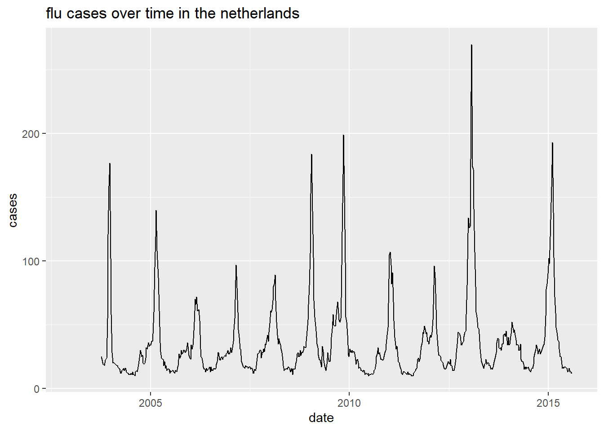

8 SQL data analysis
In this report I add three different datasets to an sql database and join the table together. With this data I make three different graphs to show my skill in R and SQL.
First thing is loading all the packages I use
library(dslabs)
library(readr)
library(tidyverse)
library(here)
library(DBI)Here I load the data with the use of the “read_csv” command and the “here package”
# Laden van flu data en de eerste 10 rows skippen
flu_data <- read_csv(here("data","flu_data.csv"), skip = 10)
# Laden van denque data en de eerste 10 rows skippen
dengue_data <- read_csv(here("data","dengue_data.csv"), skip = 10)
# Laden van gampinder in gampinder (niet nuttig).
gapminder <- gapminderHere a make the tables tidy, this for later use (is easier to work with tidy data).
# gapminder zelfde colnaam geven
gapminder_tidy <- gapminder %>% rename(Date = year)
# flu_data tidy maken
flu_data_tidy <- pivot_longer(data = flu_data, cols = -c("Date"), names_to = "country", values_to = "cases")
# en factor van country maken
flu_data_tidy$country <- as.factor(flu_data_tidy$country)
# dengue_data tidy maken
dengue_data_tidy <- pivot_longer(data = dengue_data, cols = -c("Date"), names_to = "country", values_to = "activity")
# en factor van country maken
dengue_data_tidy$country <- as.factor(dengue_data_tidy$country)After this I exported the tidy data to csv an rds files
# Oplsaan als CSV bestand
write_csv(flu_data_tidy, path = here("data","flu_data_tidy.csv"))
# Oplsaan als CSV bestand
write_csv(dengue_data_tidy, path = here("data","dengue_data_tidy.csv"))
# Oplsaan als CSV bestand
write_csv(gapminder_tidy, path = here("data","gapminder_tidy.csv"))
# opslaan als rds bestand
write_rds(flu_data_tidy, path = here("data","flu_data_tidy.rds"))
# opslaan als rds bestand
write_rds(dengue_data_tidy, path = here("data","dengue_data_tidy.rds"))
# opslaan als rds bestand
write_rds(gapminder_tidy, path = here("data","gapminder_tidy.rds"))These are the commands I used in the sql database with the program DBeaver
# en table maken
CREATE TABLE flu_data (
Date VARCHAR(50),
country VARCHAR(50),
cases VARCHAR(50),
CONSTRAINT PK_flu PRIMARY KEY (Date,country)
);
# de date naar de table verplaatsen
COPY flu_data FROM 'C:/Users/Bas/Desktop/School/Programmeren/datascience/portfolio/data/flu_data_tidy.csv' WITH (FORMAT csv);
# de table laten zien
SELECT * FROM flu_data;
# en table maken
CREATE TABLE dengue_data (
Date VARCHAR(50),
country VARCHAR(50),
activity VARCHAR(50),
CONSTRAINT PK_dengue PRIMARY KEY (Date,country)
);
# de date naar de table verplaatsen
COPY dengue_data FROM 'C:/Users/Bas/Desktop/School/Programmeren/datascience/portfolio/data/dengue_data_tidy.csv' WITH (FORMAT csv);
# de table laten zien
SELECT * FROM dengue_data; Here I connect to the SQL database and inspect the database with the help of R.
# connect to the database
con <- dbConnect(RPostgres::Postgres(),
dbname = "workflowsdb",
host="localhost",
port="5432",
user="postgres",
password="kaas")
# laat de tables zien
dbListTables(con)## [1] "flu_data" "dengue_data" "gapminder"# laat de colummen in flu_data zien
dbListFields(con, "flu_data")## [1] "date" "country" "cases"# laat het tabel flu_data zien
head(dbGetQuery(con, 'SELECT * FROM flu_data'))## date country cases
## 1 Date country cases
## 2 2002-12-29 Argentina NA
## 3 2002-12-29 Australia NA
## 4 2002-12-29 Austria NA
## 5 2002-12-29 Belgium NA
## 6 2002-12-29 Bolivia NA# disconnect van de database
dbDisconnect(con) These are the commands I used in the sql database with the program DBeaver to create the gapminder table.
#create gapminder table
CREATE TABLE gapminder (
country VARCHAR(50),
Date VARCHAR(50),
infant_mortality VARCHAR(50) not null,
life_expectancy VARCHAR(50) not null,
fertitlity VARCHAR(50) not null,
population VARCHAR(50) not null,
gdp VARCHAR(50) not null,
continent VARCHAR(50),
region VARCHAR(50),
CONSTRAINT PK_gapminder PRIMARY KEY (Date,country)
);
#import the gampinder file
COPY gapminder FROM 'C:/Users/Bas/Desktop/School/Programmeren/datascience/portfolio/data/gapminder_tidy.csv' WITH (FORMAT csv);
# laat de tabel zien
SELECT * FROM gapminder; Here I select two table together forming 1 table wich I save as “gapminder_flu”
# connect to the database
con <- dbConnect(RPostgres::Postgres(),
dbname = "workflowsdb",
host="localhost",
port="5432",
user="postgres",
password="kaas")
gapminder_flu <- dbGetQuery(con, 'select distinct *
from flu_data,gapminder
where flu_data.country = gapminder.country;'
)
# disconnect van de database
dbDisconnect(con) Now I have the data wrangled an can make all kinds of graphs with the data
# filter for the Netherlands and calculate the average cases over time
cases_netherlands <- gapminder_flu %>% filter(country == "Netherlands") %>% group_by(date=as.Date(date)) %>% summarise(mean_cases=mean(as.numeric(cases)))
# make a gg line plot
netherlands_graph <- cases_netherlands %>%
ggplot(aes(x = date, y = mean_cases)) +
geom_line() +
labs(
title = "flu cases over time in the netherlands",
y = "cases"
)
netherlands_graph
# string naar date veranderen
gapminder_flu$date <- as.Date(gapminder_flu$date)
# nieuw object maken waar het gemmidelde cases is berekend in 2015 in europa
country_cases <- gapminder_flu %>% filter(between(date, as.Date("2015-01-01"), as.Date("2015-12-30"))) %>% filter(continent == "Europe") %>% group_by(country) %>% summarise(mean_cases=mean(as.numeric(cases)))
# ggplot maken
graph <-country_cases %>%
ggplot(aes(x = country, y = mean_cases, fill = country_cases$country)) +
geom_bar(stat = "identity") +
theme(axis.text.x = element_text(angle = 90, vjust = 0.5, hjust=1))+
labs(
title = "Average flu cases per europian country in 2015"
)
# ggplot in een plotly veranderen
graph
# string naar date veranderen
gapminder_flu$date <- as.Date(gapminder_flu$date)
# nieuw object maken waar het gemmidelde life_expectancy is berekend in 2015 in europa
country_life <- gapminder_flu %>% filter(between(date, as.Date("2015-01-01"), as.Date("2015-12-30"))) %>% filter(continent == "Europe") %>% group_by(country) %>% summarise(mean_cases=mean(as.numeric(life_expectancy)))
# ggplot maken
graph_life <-country_life %>%
ggplot(aes(x = country, y = mean_cases, fill = country_cases$country)) +
geom_bar(stat = "identity") +
theme(axis.text.x = element_text(angle = 90, vjust = 0.5, hjust=1))+
labs(
title = "Average life expectancy per europian country in 2015"
)
# ggplot in een plotly veranderen
graph_life